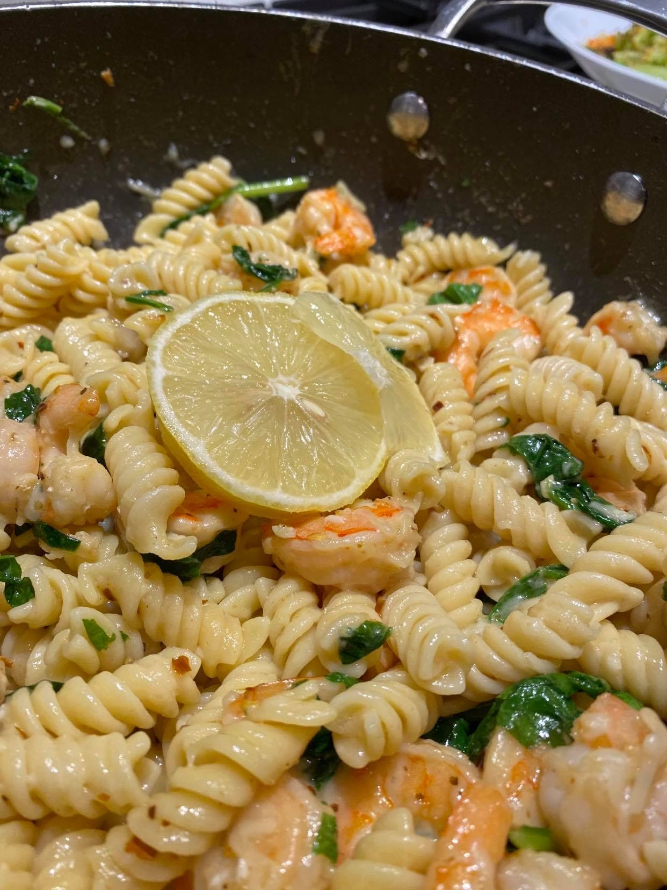
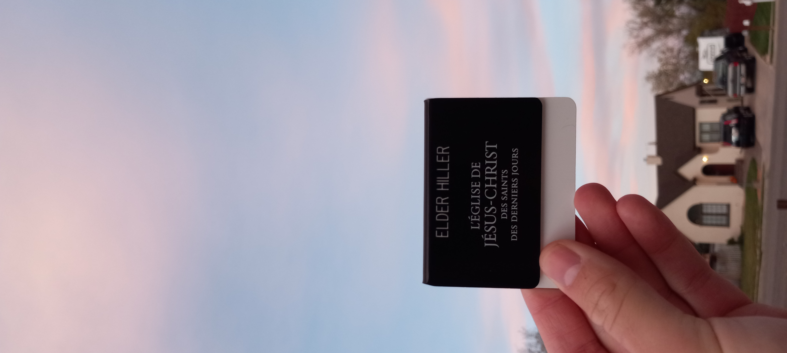

Which is debatably one of my favorite places on Earth!! I have spent every summer since I was a
little kid in the Lake Powell area! And have spent so many weekends down there visiting friends
this past school year! The place where Jase, one of my best friends lives! I cannot be more
excited to be serving there while I wait for my Visa to come through!! I cannot wait to be in
the area of so many dear friends and Family. And be able to help people down there for a while!!
AND ITS WARM WOOHOO.
Okay now onto other things, Elder Smith and I have been still going hard on
our 30 new words a day, which we just hit DAY 24!! Which means from our daily challenge we’ve
roughly learned 720 words!
That's not even including the words we're learning in our classes!!
The rate our district is learning French is incredible! And I cannot wait to continue learning
it for the next 2 years.
We're on our last official week of French only lessons and
after that
we have 3 more weeks of Tahitian, taught. . . . IN FRENCH! It is so awesome.
Fun news
FUN NEWS
- new favorite Tahitian word " oia ia " pronounced "oh yeah yeah" which means exactly how it's
pronounced haha.
- We had some hilarious moments this week. Being in an entire district of Guys (and
Soeur Thelin) has been a blast. We all had the same lightsaber when we were young.
- Elder Carter had a Peanut Butter and Honey sandwich and LIKED IT!! Huge improvements,
huge wins for America (he's from england)
-I think I finally understand Tahitian Pronouns whoohoo
-Scones are different from what I thought they were
- MY WIFI IS SO FAST! I've been the slowest out of my district for weeks now but we
fixed it this past week and I am number one now. Super cool!
- apparently The Tahiti Mission is the largest geographical mission out there. But its
majority is water not land haha.
Spiritual Thought
Spiritual Thought A really cool experience we had this week was in one of our discussions with a lady named Dorothée! She is just the best, this week we talked about how God can answer our prayers. And honestly it was a surreal moment!! I got to ask her about any questions she had and one of the questions she had was why was her Mother sick. Her mother is facing cancer currently and she has a lot of questions about why something like this would happen. We shared with her about the first vision and about how Joseph Smith had questions just like her. That God answers our prayers and knows what we need.

Then we watched this amazing video that honestly brought tears to us all. I highly encourage watching it because it is an amazing video.
Ignore the French subtitles on the bottom. Oh but yeah this whole discussion with her was about 30 minutes in French together. But it was awesome being able to communicate everything with her and actually understand what she's going through because I can speak her language. She is amazing and really inspires me and Elder Smith as well.
We were able to help lift each other up. Which I've discovered is really my purpose as a missionary. I am here to help lift other's lives up and give them hope. Just as Jesus Christ did. It's something I encourage you guys to do. Find ways to lift each other out of hardship. There are already so so so many hard things happening in the World. Choose not to be another difficulty. Choose to do good. Choose to help those around you. It is so worth it.
 Find more photos here MTC Photo Album